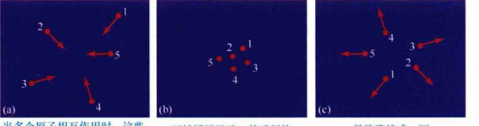
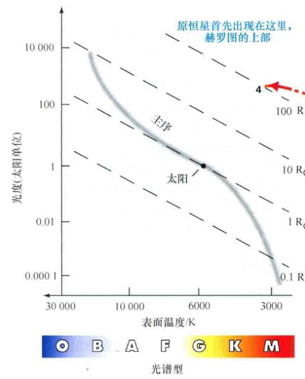
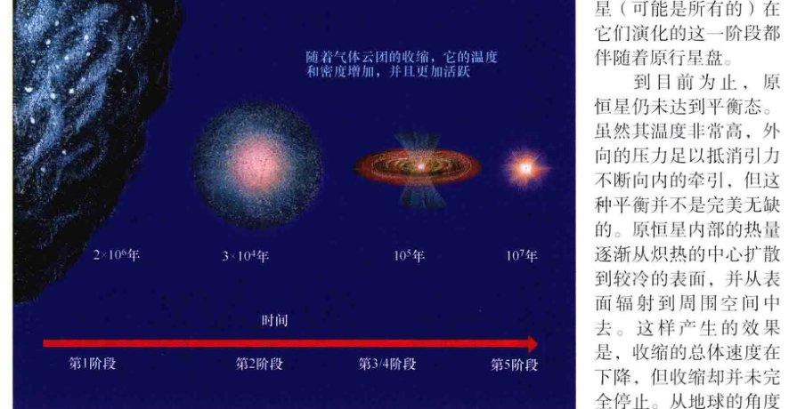
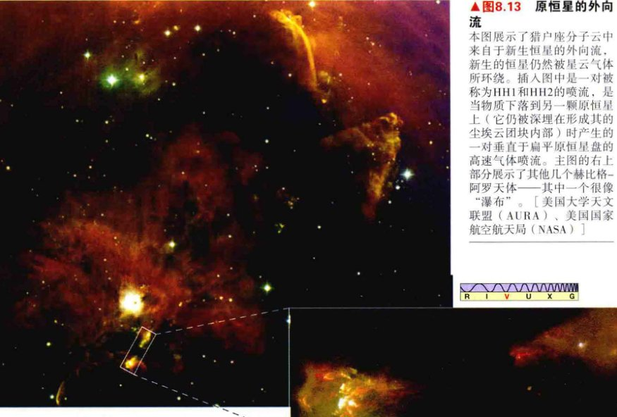
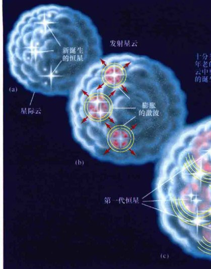
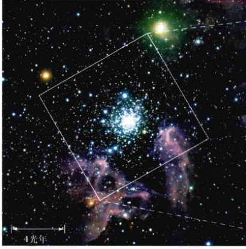

第19章 恒星的形成 创伤式的诞生
我们现在从星际介质——恒星之间的气体和尘埃——回到恒星本身。接下来的四章将讨论恒星的形成和演化。我们已经看到，恒星在消耗它们的燃料供应时会发生变化，我们观测到了大量处于不同演化阶段的恒星。在这些观测的帮助下，天文学家已经发展出了一种解释恒星演化的模型——恒星经历了从诞生、成熟、变老到死亡的复杂变化。
我们首先研究由气体和尘埃组成的星际云如何转变成夜空中无数的恒星。我们将见到这个过程会比较剧烈——恒星诞生的地方有着剧烈的爆发、星际激波，甚至真实的碰撞。在这之中，星前碎片在新诞生的星团里攒积质量、竞争资源。太阳和行星地球就是45亿年前类似的恶劣环境中的幸存者。
学习目标
本章的学习将使你能够：
- 总结类太阳恒星的形成过程和经历的演化阶段。
- 说明恒星的形成如何依赖于它的质量。
- 描述一些支持现代恒星形成理论的观测证据。
- 描述星际激波的性质，并讨论其在恒星形成过程中的可能作用。
- 解释为什么恒星成团的形成，区分疏散和球状星团。
19.1 恒星形成区
我们的宇宙在不断地自我更新。自从银河系形成以来，已有数以亿计的恒星诞生、生长演化，直到死亡。当我们凝望夜空时，我们不会看到这一过程，这是因为恒星上演这种宇宙戏剧的时标以人类标准来看非常非常长。即使是寿命较短的O型星也能生存数百万年。（6.8节）不管怎样，我们有足够的证据表明，恒星的演化贯穿整个宇宙。
宇宙中年轻的恒星
太阳和我们近邻宇宙中的大部分恒星可能都是在数十亿年前形成的。然而我们知道，许多距离相对较近的恒星则要年轻得多。第7章已经讨论过了壮丽的发射星云。照亮这些星云的超级明亮的但却短暂的恒星，直接证明了恒星的形成是一个持续的过程。（7.2节）这些区域中最炽热的恒星形成了还不到几百万年——宇宙中的眨眼之间——并且银河系的恒星形成也不会在最近突然停止！恒星的形成贯穿了整个银河系的历史，即便是你在读这段话的时候。

这幅光学、红外结合的图像来自于哈勃太空望远镜上崭新的宽视场相机，展示了星团R136清晰细节图，一大群年轻明亮的蓝色恒星仍然镶嵌在发光的红色蜘蛛星云中，这一星云形成于几百万年前。整个区域宽约100光年。[美国国家航空航天局 (NASA)/欧洲航天局 (ESA)]
事实上，我们在许多超越银河系之外的宇宙区域内都观测到了恒星形成区。图19.1显示了迄今为止发现的最为壮观的一个区域。它位于银河系的一个小型伴星系内——被称为麦哲伦云的其中一个。它距离我们大约 170,000光年，是有着大量年轻蓝色恒星的壮丽区域，是我们近邻宇宙中最大的孕育恒星的场所。银河系很可能包含许多类似的大星团，但是即使存在的话，也一定被星际之间众多的星际物质遮挡住了。
简而言之，当部分星际介质——我们在第7章中研究过冷暗云——在自身引力作用下开始坍缩的时候，恒星就开始形成。（7.3节）云团碎片通过收缩加热，当中心温度最终足够炽热时，核聚变便开始了。在这一时刻，收缩停止了，一颗恒星便诞生了。但是什么引起了坍缩呢？坍缩是如何开始，又是为何结束的呢？是什么决定了一颗恒星（或者一群恒星）的质量的呢？（6.8节）我们将会看到，恒星形成的环境，以及恒星形成过程中与邻居之间的相互作用对恒星的性质至关重要。
详细说明 19-1 恒星形成中的竞争
正文中我们说明了恒星是引力和内部加热互相竞争的产物，引力使星际云坍缩，而加热则与之相反。实际上，星际介质更为复杂、内部加热并不是对抗引力收缩的唯一因素。另外两个影响恒星形成的重要因素是自转和磁场。
旋转
自转——与引力向内的牵拉作用相对抗。一团正在收缩的并有较小自转的云将会在其中间部分产生一个核球。随着云的收缩，云的自转加快（由于角动量守恒），核球慢慢长大，边缘物质逃离并飞入太空。（想象被快速旋转的自行车车轮抛出的泥块）。最终，云团形成一个扁平旋转着的盘。
对于云中没有被抛射到星际空间而留下来的部分物质，一定存在某种力的作用——这里是引力的作用。旋转得越快，云团气体逃离的可能性越大，就越需要更大的引力作用来保持它。因此，我们可以将自转看作是用于抵消引力向内牵拉的作用。如果自转作用大于引力的作用，那么云团就会消散。因此，要收缩形成一颗恒星，快速自转的星际云需要有比非自转的云更大的质量。
磁场
磁场也会阻碍云的收缩。磁场渗透在大多数星际云中。随着云团收缩，其内部温度升高，原子的碰撞变得十分剧烈并足以电离（部分电离）气体。磁场可以产生电磁力，并控制其中的带电粒子。（5.5节）形象地讲，粒子倾向于被“绑定”在磁场里——它们可以沿着磁场线自由地移动，却不能垂直于磁场线运动。
磁场会阻碍星际气体云的收缩，使云团以一种扭曲的方式收缩。因为离子被束缚在磁场内，而磁场线（红色）沿着云的收缩方向，所以云团本身沿磁场线收缩的速度要比垂直于磁场线方向的速度快很多。附图中三幅子图显示了有磁场的星际云缓慢收缩的过程。虚线代表磁场线被云团收缩时扭曲和压缩的区域。随着磁场线被压缩，磁场强度增强，变得比普通星际空间里的磁场强很多。原始的太阳星云可能就以这样的方式形成了一个强磁场。
即使是很小的转动或磁场也能与引力相抗衡，从而大大改变典型气体云的演化过程，但从理论上研究这些因素之间的相互影响是非常复杂并且极端困难的。本章中，在尝试理解恒星形成过程的大致轮廓时，我们将先不考虑这两种复杂的因素。但请记住，它们对恒星形成的具体过程有着非常重要的作用。
引力和加热
是什么决定了哪些星际云会坍缩？就这一点而言，既然所有的云都受到引力作用，那为什么不会都在很久以前就开始坍缩？为了回答这些问题并理解我们所看到的恒星的形成过程，我们必须更多、更详细地探究在决定云团命运时与引力相竞争的因素。到目前为止，其中最重要的是原子的随机运动或加热。详细说明8-1讨论了其他一些影响并复杂化了恒星形成过程的因素。
我们已经见过了许多加热和引力之间相互竞争的实例。气体的温度只是其中原子和分子平均速度的简单量度，因此，温度越高，分子的平均速度就越大，从而气体的压力就越高。这就是太阳和其他恒星不再坍缩的主要原因：被加热的气体向外的压力与向内的引力达到精妙的平衡。（图5.2）
星际云中的一些原子的运动受到的引力作用非常小，它们的运动轨迹变化微乎其微。(a) 形成之前；(b) 正在形成；(c) 在发生偶然的随机碰撞后。
考虑一大片星际气体云中的一小部分。首先只有几个原子开始向中心聚集，如图19.2所示。尽管云的温度非常低，但由于云仍然有温度，所以每个原子仍然会有一些随机运动。（详细说明2-1）每个原子同时也受到周围所有其他粒子的引力吸引。然而引力并不大，这是因为每个原子的质量都非常小。当几个原子在某一瞬间偶然聚到一起，如图19.2(b)所示，结合后的引力并不足以将它们束缚成一个持久而独立的物质团块。这个偶然形成的团块将在形成后很快地消散。热运动的作用远远强于引力作用的影响。
现在考虑一团更大的原子群。想象一下，例如50、100、1000、甚至上百万个原子——每个都与其他所有的原子通过引力相互作用。那么随着质量的增加，引力会变得比以前更强。这么多原子产生的合引力能够强大到阻止团块再一次消散吗？答案是不能——至少在目前发现的星际环境下。即使这样，大质量的原子团块产生的引力也仍然太弱，不足以克服热运动的影响。
到底需要集合多少原子的引力才能阻止它们重新分散到星际空间中呢？答案是一个非常巨大的数字，即使是对一个典型的冷云 (100 K) 来说，也需要将近 1057 个原子——远远超过世界上所有海滩上的沙粒的总数 (1025)，甚至超过构成我们地球上所有原子核的基本粒子数 (1051)。地球上没有任何事物是可以简单地与恒星相比较的。
模拟恒星形成
接下来的两小节将描述目前被广泛接受的恒星形成理论，其中很大一部分来自于在高性能计算机上所进行的数值模拟实验。得到的结果是考虑了多方面因素的数学预测，结合了引力、热力、核反应率、元素丰度和其他主宰星际云坍缩的物理过程（见详细说明8-1）。
科学理论总是随着实验或观测数据而发展，恒星形成理论也不例外。（1.2节）恒星形成理论已经解释了无数恒星和恒星形成区的观测。然而，恒星形成过程中的现象是如此复杂和多样化，以至于建立理论框架来连接不同现象之间的“连接点”是非常有用的，而这些现象表面上看起来毫不相关。因此，我们首先给出理论，然后再讨论观测数据如何契合和支撑这些理论图景。
✓ 主导恒星形成的基本竞争过程是什么？
19.2 类太阳恒星的形成
当引力作用大于无规则的热运动时，这种引力会破坏气体云团的平衡，使云团开始收缩，这时恒星开始形成。直到云团内部结构发生剧变，平衡才能最终恢复。
星际气体云团在演化为类太阳的主序星的过程中，会历经七个基本的演化阶段，见表19.1。这些阶段可用不同的中心温度、表面温度、中心密度和星前天体的半径等参数来描述。这些物理量描述了由冷暗的星际云变为炽热的、明亮的恒星的过程。表中给出的数据和接下来的分析只适用于质量与太阳相近的恒星。下一节中，我们将放宽条件，讨论质量与太阳相差较大的恒星的形成过程。
请注意这些阶段的时间尺度——即使是与其中最短的演化阶段相比，人类数千代的繁衍也不过是一眨眼的时间。天文学家并不是通过观察单个气体云团或一组气体云的完整演化过程来洞察这一天文过程的。相反，他们结合理论与观测来不断修正那些描述恒星如何形成的数学模型。
表19.1 类太阳恒星的星前演化
| 阶段 | 到下一阶段的大约时间/年 | 中心温度/K | 表面温度/K | 中心密度/(粒子/m3) | 直径/km | 天体 |
|---|---|---|---|---|---|---|
| 1 | 2 × 106 | 10 | 10 | 109 | 1014 | 星际云 |
| 2 | 3 × 104 | 100 | 10 | 1012 | 1012 | 云团碎块 |
| 3 | 105 | 10,000 | 100 | 1018 | 1010 | 云团碎块/原恒星 |
| 4 | 106 | 1,000,000 | 3000 | 1024 | 108 | 原恒星 |
| 5 | 107 | 5,000,000 | 4000 | 1028 | 107 | 原恒星 |
| 6 | 3 × 107 | 10,000,000 | 4500 | 1031 | 2 × 106 | 恒星 |
| 7 | 1010 | 15,000,000 | 6000 | 1032 | 1.5 × 106 | 主序星 |
① 粗略数值，以做比较。注意，太阳的直径是 1.4×106 km，而太阳系的直径约为 1.5×1010 km。
第1阶段：星际云
恒星形成的最初阶段是致密的星际云——它是暗尘埃云或分子云的核。这些气体云体积庞大，有时可以横跨数十秒差距 (1014~1015 km)。其典型的温度在10K左右，密度约 109 个粒子/m3。第1阶段的气体云的质量为太阳质量的数千倍，其形式主要是冷原子或者气体分子。（在第1阶段中，尘埃在气体云的收缩过程中起到冷却作用，同时也在行星形成过程中起到关键作用；然而，尘埃的质量相对于整个云团的总质量来说是可以忽略的。）
虽然暗星际云的内部温度很低，但大多数观测到的暗星际云的内部压力似乎都可以抵抗引力引起的收缩。但是，如果这样的云团想要成为恒星的诞生地，它们就必须变得不稳定，在自身引力的作用下开始坍缩，最后分裂为较小的碎块。大多数天文学家认为，一些外力作用促使恒星开始形成，可能是附近的恒星爆发产生的激波，或是附近的O型或B型恒星形成并将周围物质电离而产生的压力波——这些外力挤压云团，打破了云团中压力与引力的平衡，从而使云团开始收缩。（5.2节、6.5节）又或是随着带电粒子缓慢地漂移穿过限制其的磁场线，支撑气体的磁场开始减弱，进而使得气体无法支撑自身的质量（详细说明8-1）。

当星际云收缩时，引力不稳定性使其碎裂为更小的碎块。这些碎块继续坍缩和碎裂，最终形成数十或者数百颗独立的恒星。
不管触发的机制是什么，理论表明，坍缩一旦开始，由于引力不稳定性的持续作用，气体云团会自然地分裂成越来越小的物质团块。如图19.3所示，一块典型的云团可以分裂为数十、数百甚至数千个碎块，每一个碎块都会模仿母体云团的收缩过程，甚至以更快的速度收缩。从一个稳定的、完整的云团到数个坍缩的碎块，这一完整过程需要数百万年时间。
这样，根据气体云团碎裂时的确切条件，一块星际云可能会产生几十颗恒星，每一颗都比太阳大得多；或者产生成百上千的恒星的星团，每一颗都与太阳大小接近或更小。几乎没有证据显示恒星是“独生子女”，即一团气体云只产生一颗恒星。大多数恒星——甚至可能是所有的恒星——似乎都处于多星系统中或者是一个大的恒星群体的成员。现在我们观察到的太阳在宇宙中似乎是独立的，这可能是因为形成太阳的恒星系统与一颗恒星或是某个更大的天体碰撞后，太阳从中逃逸出来的结果。
第2阶段：云团碎块的坍缩
我们对恒星演化图景第2阶段的描绘是云团碎块所处的物理环境，这一碎块只是典型的星际云碎裂成的众多碎块之一。在这一阶段中，物质总质量介于1~2倍太阳质量之间的碎块的最终命运是形成类太阳的恒星。估计这团模糊的气体球的跨度约为几百分之一秒差距，尺寸仍然是太阳系的100倍。这时，它的中心密度约为 1012 个粒子/m3。
虽然碎块急剧收缩，但是其平均温度和母体温度差异不大，原因在于这些气体不断地向周围空间放射出大量的能量。碎块中的物质非常稀薄，其中产生的光子会很容易地逃逸，不会被云团碎块重新吸收，因此在坍缩时产生的能量实际上基本都辐射出去了，碎块温度的增加并不显著。只有在碎块的中心，由于辐射必须穿透大量的物质才能逃逸，因此中心温度的增加稍微显著一些。在这一阶段，碎块中心的温度差不多为100K。然而，云团碎块的大部分地方，仍都保持着收缩时的低温。
当收缩的云团内部密度增加到一定程度时，不断碎裂的过程最终会停止。随着第2阶段产生的云团碎块继续收缩，它们的密度增加，最终使得光子难以逃逸出去。被俘获的辐射随之导致云团温度的上升，压力也随之增大，最终碎裂会停止。
第3阶段：碎裂停止
第3阶段开始时，第2阶段的碎块差不多已经收缩为我们太阳系的大晓了（仍然是太阳大小的10,000倍），从碎块开始收缩算起，这一过程历经了几万年。碎块内部区域的密度非常之大，气体对其辐射来说已经变得不透明了，因此碎块中心的温度剧增，就像表19.1所描述的那样——中心温度高达10,000K，比地球上温度最高的炼钢炉还要热。然而，碎块外部区域的温度并没有增加多少。这一部分气体仍然可以向周围辐射能量，因此继续保持低温。碎块中心的密度增加速度远快于边缘的密度增加速度，因此气体的外部温度低于中心温度，外部也比中心更加稀薄。这时，中心的密度大约为 1018 个粒子/m3（密度仍为 10-9 kg/m3 左右）。
终于，这块收缩的气体云团碎块开始变得像颗恒星了。稠密的、不透明的中心区域被称为原恒星——恒星诞生初期的胚胎形态。碎块仍然在收缩、碎裂，外围物质向内倾泻得越来越猛烈，原恒星质量于是不断增加。然而，原恒星的半径在不断减小，因为压力仍然不能抵消万有引力的不断牵引。在第3阶段之后，我们可以分辨出原恒星的一个“表面”——它的光球层。在光球层内部，原恒星的物质仍然对辐射不透明。从这里开始，表19.1中列出的表面温度指的便是坍缩的气体云团碎块的光球层温度，而不是稀薄的“边缘”部分的温度，辐射可以轻易地从后者中逃逸出去，因此那里仍然保持为低温。
第4阶段：原恒星
随着原恒星的演化，它的体积在收缩、密度在增加，并且核心和光球层的温度都在增加。在云团碎块开始形成之后大约100,000年，碎块进入第4阶段，此时它的中心在约1,000,000K的温度下翻腾着。电子和质子从原子中分离开来，以几百千米每秒的速度运动着，然而，中心温度仍然不到 107 K——触发质子-质子核反应，将氢聚合为氦的温度。（5.6节）这时，这团乱糟糟的气团的尺度大约有水星轨道那么大，仍然比太阳大很多。由于周围物质向中心倾泻并被加热，原恒星的表面温度现在已升至几千开尔文。
在测出原恒星的半径和表面温度之后，我们可以计算其光度。令人惊奇的是，计算结果表明，它的光度为太阳光度的几千倍。虽然原恒星的表面温度只有太阳表面温度的一半，但它的体积为太阳体积的几百倍，因此它的总光度很高——实际上比大多数的主序星都高得多。由于核反应还没有开始，所以原恒星不断收缩时释放出的引力势能，以及碎块周围的物质不断地向原恒星表面倾泻的这两个因素，是原恒星光度的全部来源。
红色箭头指出星际云碎块以第4阶段的原恒星形式，在到达林忠四郎轨迹收缩阶段的末尾之前的大致轨迹。箭头上面和下一幅赫罗图中出现的黑体数字表示表19.1中列出的星前演化的各个阶段。
在到达第4阶段时，原恒星的物理性质便可以用赫罗图 (H-R) 来表示了，如图19.4所示。注意，赫罗图描绘了恒星的两个关键属性：表面温度（向左递增）及光度（向上递增）。（6.5节）图中光度的刻度用太阳光度 (4 × 1026W) 来表示。我们的太阳是G2型恒星，图中温度标为6000 K，光度为一个单位。和以前一样，赫罗图上的对角虚线代表天体的半径，显示出原恒星在演化过程中的体积变化。在恒星演化过程中的每一阶段，其表面温度和光度都可以由图中的一点来表示。随着恒星的演化，这一点的运动被称为恒星演化轨迹。图示描绘了恒星的一生。
图19.4中红色的轨迹描绘了星际云碎块在第4阶段演化为原恒星后的大致路径（位于图中右侧边缘）。这条早期的演化轨迹被称为林忠四郎轨迹（或称海亚希轨迹），以20世纪日本天体物理学家林忠四郎命名，他在20世纪60年代所做的有关主序前恒星演化的开创性工作，仍然是所有恒星形成研究的理论基础。
艺术家笔下处于早期演化阶段的星际云，每一阶段与表19.1对应。（没有按比例绘制。）每一阶段所经历的时间（年）也被标了出来。
林忠四郎轨迹上的原恒星在这一演化阶段通常会展现出剧烈的表面活动，产生极其猛烈的原恒星风，密度要比从太阳流出的太阳风致密得多。如前所述，原恒星在这一阶段的演化一般被称为金牛T阶段，以金牛座T型星命名，这是第一颗被观测到的处于星前演化阶段的“恒星”（实际上是原恒星）。
第5阶段：原恒星的演化
当原恒星处于林忠四郎轨迹上的第5阶段时，它已经比较接近于主序星了。它的体积收缩到约为太阳的10倍大小，表面温度约为4000K，光度降低至太阳光度的10倍左右。此时，原恒星的中心温度达到 5,000,000 K 左右。中心的气体已经被完全电离，但质子仍然没有足够的热运动能量来克服质子之间的电磁斥力，因而不能进入束缚原子核的核力的作用范围。（5.6节）核心的温度仍然太低，不能引发核反应。
随着原恒星接近主序阶段，演化速度变得更加缓慢。星际云最初的收缩和碎裂发生得十分迅速，但到第5阶段，随着原恒星即将成为一颗发育完全的恒星，它的演化变慢了。导致演化变慢的原因是热能，即使是引力要将炽热的天体压缩，也会比较困难。压缩的速度很大程度上取决于原恒星的内能向空间辐射的速率。内能的辐射速率越大——也就是说，能量从恒星表面逃逸得越快——收缩发生得就越快。因此，随着光度的降低，收缩的速率也会同时降低。
第6阶段：恒星诞生
在出现大约1000万年之后，原恒星终于演化成为一颗真正的恒星。在林忠四郎轨迹的末端，原恒星处于第6阶段的时候，它的质量差不多是1倍太阳质量，半径收缩到约 1,000,000 km。原恒星的收缩使得其中心温度上升到 10,000,000 K，足以引发核反应，位于核心的质子开始聚变成氦原子核，一颗恒星就此诞生。如图19.6所示，恒星此时的表面温度约为4500 K，仍然比太阳的表面温度低一些。虽然新诞生的恒星半径比太阳大一些，但它的温度要低一些，这意味着它的光度比不上太阳（实际上，只有太阳光度的三分之二）。

原恒星观测属性的变化可由图中从第4阶段到第6阶段的光度不断降低的路径来表示，这一路径通常被称为林忠四郎轨迹。在第7阶段，新诞生的恒星到达主序阶段。
第7阶段：主序星的最终形成
在这之后大约3000万年的时间内，第6阶段的恒星稍稍会有一点收缩。在这样的微调过程中，恒星的中心密度升高到 1032 个粒子/m3（更简便的记法为 105 kg/m3），中心温度上升到 15,000,000 K，表面温度达到6000 K。到第7阶段的时候，恒星终于演化至主序阶段，正好处于太阳所处的位置。压力和引力最终趋于平衡，核心生成核能的速率正好与能量从恒星表面辐射出去的速率相匹配。
刚才描述的演化过程所经历的时间约为4000万~5000万年。虽然以人类的标准来说，这是一段很长的时间，但它仍然不到太阳在主序上寿命的1%。一旦某个天体开始在核心发生核聚变并建立好“引力向内、压力向外”的平衡，它就注定会稳定地燃烧很长一段时间。恒星在赫罗图上的位置——也就是说，它的表面温度和光度——在接下来的100亿年里不会有实质性的变化。
✓ 如何区分坍缩云和原恒星？又如何区分原恒星和恒星呢？
19.3 其他质量的恒星
前面描述的数值和演化轨迹只适用于1倍太阳质量的恒星。对于其他质量的星前天体，它们的温度、密度和半径都有着相似的演化趋势，但数值和演化轨迹都显著不同。或许不必觉得惊奇，星际云中的质量最大的碎块倾向于产生质量最大的原恒星、并最终形成质量最大的恒星。同理，小质量的碎块产生低质量的恒星。不管是什么质量，原恒星演化轨迹的终点都在主序上。
零龄主序
图19.7比较了太阳所经历的理论主序前的演化轨迹与30%太阳质量的恒星和3倍太阳质量的恒星各自对应的演化轨迹。所有的三条演化轨迹在赫罗图上以大致相同的方式变化，但最终形成质量比太阳更大的恒星的云块碎块会在赫罗图上沿较高的轨迹到达主序，而那些最后形成小质量恒星的云块则沿较低的轨迹。星际云形成主序星所需的时间也强烈地依赖于它的质量。质量最大的云团碎块加热到1000万开尔文并成为O型恒星只需要几百万年，差不多是太阳所需时间的1/50。对于质量小于太阳质量的星前天体，其情况相反。例如，一颗典型的M型星，需要将近10亿年才能形成。

大于太阳质量和小于太阳质量的恒星的星前演化轨迹。
当恒星的核开始氢燃烧且其性质达到稳定值时，我们就认为它演化到了主序阶段。因此，理论计算得到的主序线被称为零龄主序（或简称为ZAMS）。事实上，理论推导得到的零龄主序线与观测到的太阳临近区域内的恒星以及更遥远的星团（见19.6节）的实际主序符合得很好，这为现代恒星形成和恒星结构理论提供了强有力的支持。（1.2节）
如果所有气体云团都有正好相同的元素组成，并且比例也相同，那么质量将是决定新生恒星在赫罗图上位置的唯一因素，零龄主序将会成为一条轮廓分明的线，而不是有一定宽度的带。然而，恒星的化学组成会影响其内部结构（主要是改变其外层的不透明度），这又会进一步影响恒星在主序时的温度和光度。与质量相同但所含重元素较少的恒星相比，含重元素较多的恒星趋于变得更冷，光度也更暗弱一点。因此，恒星之间化学组成的差异使我们观测到的零龄主序成为“模糊的”宽带。
重要的是要注意到，主序本身并不是恒星的演化轨迹，恒星并不是沿着主序演化的。相反，主序只是赫罗图上的一个“中转站”，恒星在这里停留并且消耗其生命的大部分时间——小质量的恒星位于下方，大质量的恒星位于上方。恒星一旦演化到主序，它在赫罗图上的位置就基本不会改变了，会一直以第7阶段的天体形式存在。（换句话说，如果一颗恒星演化到主序时是G型星，那么它绝不会向上演化成为B型或O型那样的蓝超巨星，也不会向下演化成为M型的红矮星。）正如我们将在第9章看到的那样，当恒星离开主序时，就会进入下一阶段的恒星演化。恒星在离开主序进入下一演化阶段的过程中，其表面温度和光度几乎和数百万年（或数十亿年）前刚到达主序时一样。
失败的恒星
一些云团碎块太小，以至于永远都无法形成恒星。例如，考虑巨行星木星。它形成于太阳的原恒星盘（太阳星云），并且在引力作用下收缩。产生的热量是可以被探测到的，但木星的质量还没有大到可以让它在引力的作用下将物质压缩至核燃烧的临界点。相反，在其中心温度达到足以引发氢聚变之前，木星就在压力和自转作用下达到稳定——木星永远都不能演化到原恒星阶段。如果木星，或是其他的类木行星持续地从太阳星云处吸积气体，那它就有可能成为一颗恒星（这无疑会毁灭地球上的生命）。然而，这种情况并没有发生——太阳系形成之初的几乎所有物质，都被处于金牛T型星阶段的太阳所产生的太阳风吹走。
小质量气体碎块缺乏点燃核燃烧所需的质量。它们并没有转变为恒星而是进一步冷却，最终变成致密的、黑暗的“渣块”——未燃烧物质的寒冷碎块。它们绕恒星旋转或是在星际空间中流浪。根据基础的理论模型，天文学家算出，要使核心温度高到能够点燃核燃烧，气体所需的最小质量应是太阳质量的0.08（是木星质量的80倍）。我们对恒星的实际定义是能够通过核心核聚变反应释放能量并发光的天体。所以，太阳质量的0.08是宇宙中所有恒星的质量下限。
可能有大量的“亚恒星”天体散布在宇宙各处——它们是碎块在开尔文-亥姆霍兹收缩阶段的某一时刻冷却产生的。褐矮星是一类小个头的、暗弱并且寒冷的（并且仍在不断变冷）天体。如探索8-1中讨论的那样，研究者保留了褐矮星这一概念，用于表示质量大于12倍木星质量的低质量星前碎块（根据这一定义，木星本身并不是褐矮星）。其他更小的天体被称为行星。
这些黑暗的、低质量的天体很难通过观测去研究，它们可能是行星，或是与恒星成协的褐矮星，或是远离任何恒星的星际云碎块（见探索8-1）。最新的观测表明，可能有多达1000亿颗冷的、暗弱的亚恒星天体深埋于星际空间中——这一数目可以与我们银河系中“真正的”恒星的总数相比拟。
✓ 恒星是沿着主序演化的吗？
探索 19-1 褐矮星的观测
残酷一点讲，褐矮星是恒星演化过程中的失败者——它们和恒星一样，形成于星际云的坍缩和分裂，然而它们的质量低于太阳质量的0.08（木星质量的80倍），这是在它们的核心中点燃氢聚变所需的临界质量。星际空间可能包含大量的此类暗弱天体。
虽然目前已发现数以百计的褐矮星，但探测到它们却绝非易事。它们很小、很冷，因此辐射也非常微弱。(2.4节) 我们可以使用望远镜探测到恒星，也可以通过光谱分析推断出星际原子和分子的存在，但中型尺寸的太阳系外天体仍然很难观测。利用在寻找太阳系外行星中所采用的相同技术，天文学家试图在双星系统中搜寻褐矮星。附图显示了两个双星系统中可能包含的褐矮星候选体（由箭头标出）。注意，在每种情况下，褐矮星比它们的伴星暗弱多少。要区分它们通常需要非常高的分辨率。
为了明确定义，很多研究者采用木星质量的12倍作为划分的界限。高于这个质量（但低于80倍木星质量）的天体尽管核心无法达到足够高的温度引发氢聚变，但收缩的云团碎块会经历一个短暂的氘聚变的阶段，因为核心的温度足以使原始云团中的氘核互相结合。一旦氘消耗殆尽，这一阶段也就结束了，云团的“核燃烧”生命也会随之结束。对于低于12倍木星质量的云块，任何形式的核聚变都不在预期之内。
19.4 云团碎块和原恒星的观测
我们怎样才能验证刚才所概括的理论图景呢？整个人类文明的历史比一团星际云坍缩形成恒星所需的时间要短得多。因此，我们永远无法观测到单颗恒星诞生的完整过程。然而，我们可以尽力做好如下的事情：我们可以观测很多不同的天体——星际云、原恒星和接近主序的年轻恒星——因为现在的它们正好处在演化路径的不同阶段。
刚才描述的不同演化阶段的证据来自电磁波谱的不同范围，每个观测都像是拼图的一部分。（2.3节）当方向调准合适时，所有的碎片拼在一起便可以创建出一幅恒星整个生命周期的图景。
云团收缩的证据
处于第1阶段和第2阶段的原恒星天体的温度还不够高，因此它们的红外辐射不强，它们的内部黑暗且寒冷，当然也没有光学辐射。研究分子云收缩和分裂的早期阶段的最佳方法是观测来自于这些云团中星际分子的射电辐射。再次考虑第18章中曾经学习过的灿烂的发射星云——M20。（7.2节）然而，这次我们的主要兴趣不在于图7.7所示的发光电离气体的绚烂区域。相反，照亮星云的年轻的O型和B型恒星提醒我们，那里就是恒星正在形成的一般环境。发射星云正是恒星诞生指示器。

(a) M20区域显示了恒星诞生的三种阶段的观测证据。母体星云是表19.1中的第1阶段。标记为“收缩云团碎块”的区域可能介于第1阶段和第2阶段之间。最后，发射星云 (M20本身) 源自一颗或多颗大质量恒星的形成（第6阶段和第7阶段）。
(b) B区域附近轮廓（用椭圆圈出）的特写（内含哈勃望远镜得到的子图），特别是那些致密的尘埃物质结。
(c) 斯必泽望远镜观测出的同一区域的红外图像揭示了那些被认为是恒星胚胎（箭头所指）的核。[美国大学天文联盟 (AURA)、美国国家航空航天局 (NASA)]
环绕M20周围的区域包含看上去正在收缩的星系物质。（光学）不可见气体的存在已经在图7.20中被标注了出来，图中的等值线显示了甲醛 (H2CO) 分子的丰度分布。甲醛和其他许多分子在星云附近普遍存在，特别是在富含许多尘埃的底部区域和发射星云本身的右边。对观测结果的进一步分析表明，这些分子丰度最高的区域也在坍缩和分裂，并且正在形成一颗恒星，或更确切地说，正在形成一个星团。
因此，如图19.8所示，M20内部和周围的星际云显示了恒星形成的三种不同阶段。那些围绕在可见星云周围的巨大暗分子云是第1阶段的云。它们的密度和温度都较低——分别为 108 个粒子/m3 和 20K。而在在这个大分子云的内部，有些小的区域具有更高的密度和温度。图中标为A和B的区域就是这种更致密也更热的云团，它们在光学上完全被遮挡，同时分子射电辐射的能量也最强。在这些云团中，观测到气体密度至少为 109 个粒子/m3，温度大约是100K。对区域B附近的射电谱线观测得到的多普勒频移显示，在图中标示为“收缩云团碎块”的M20的部分区域，物质正在往中心下落。近红外的观测 [见图19.8(c)] 则揭示了原恒星候选体本身正处于温暖的不断增长的胚胎之中。在不到一光年的跨度上，该区域的总质量超过一千倍太阳质量——甚至比M20本身的质量还大很多。

(a) 猎户座，长方形框出了著名的发射星云区域。猎户星云就是处于猎户座宝剑位置处中心的那颗“星”（见图1.8）。(b) (a)图部分区域的放大，为红外波段图像，揭示了星云是如何被一个巨大的分子云部分包裹着的。分子云的不同部分可能正在分裂或收缩，而更小的部分正在形成原恒星。图c~e显示了那些原恒星存在的一些证据：(c) 猎户星云本身镶嵌的星云“结”的接近真实颜色的可见光图像；(d) 强烈分子发射区域的伪彩色射电图像；(e) 许多被气体和尘埃盘包裹着的年轻原恒星中的其中一颗的高分辨率图像，行星可能最终在这些盘上形成。[P. 桑茨 (P. Sanz)/Alamy图库 (Alamy)、斯必泽空间望远镜 (SST)、哈佛-史密松天体物理中心 (CfA)、美国国家航空航天局 (NASA)]
原恒星的证据
在寻找、研究处于恒星形成的较高阶段的天体时，射电技术变得不那么有用了，这是因为第4~6阶段有越来越高的温度。根据维恩定律，它们的辐射迁移到更短的波长，因此这些天体在红外的辐射最强。(2.4节) 20世纪70年代在猎户座分子云的核心区域，天文学家探测到了一个特别明亮的红外发射源，称为贝克林-诺伊格鲍尔天体。它的光度约是太阳的光度的1000倍。大多数天文学家认为这一温暖而致密的团块是大质量的原恒星，可能处于第4阶段左右。
在20世纪80年代初期的红外天文卫星(IRAS)上天之前，天文学家认为巨星只能在遥远的分子云中形成。(4.7节) 但IRAS的观测表明，许多这样的恒星在更接近我们的地方形成，并且这些原恒星中的一些有着与太阳差不多一样的质量。图19.10展示了两颗小质量原恒星的例子，HST观测到它们都位于猎户座内恒星形成的密集区域。它们的红外热信号表明它们在预期的林忠四郎轨迹上，处于第5阶段附近。

(a) 猎户座区域内的一个行星系统大小的尘埃盘的侧向红外图像，图像展示了来自于其中心区域的光和热。根据这个未命名的辐射源的温度和光度来判断，它似乎是一颗小质量的原恒星，处于赫罗图上的林忠四郎轨迹上（第5阶段）。
(b) 猎户座内的一个稍稍进一歩演化的星周盘的光学俯视图，它环绕着嵌在内部的原恒星。[美国国家航空航天局 (NASA)]
一些红外天体的能量来源似乎是明亮炽热的恒星，这些恒星借助周围的暗云躲开了光学观测。显然，这些恒星已经足够炽热，能够发出大量的紫外辐射，而这些紫外辐射大部分被周围像“茧”一样的尘埃所吸收。吸收的能量接着再由尘埃以红外辐射的形式释放出来。这些明亮的红外源被称为茧状星云。有两个值得思考的观点支持刚刚引发核聚变的炽热恒星加热了那些尘埃的观点：①一旦中心的恒星形成，尘埃茧很快就会被驱散；②它们总是在分子云的致密核心中被发现。中心的恒星可能处于第6阶段附近。
原恒星星风
原恒星常常展现出强烈的星风。氢和一氧化碳分子的射电和红外观测表明，猎户座分子云的气体正在以接近100km/s的速度向外扩张。高分辨率的干涉观测揭示了在同一恒星形成区域内的水分子发射的扩展结点，并且观测也将星风和原恒星本身联系起来。(4.6节) 这些星风可能与许多原恒星的剧烈的表面活动有关。

(a) 原恒星周围的星云盘是酷热并有强烈外向流的地方，它形成一个垂直于盘的双极喷流。(b) 随着盘被星风吹走，喷流成扇形向外喷出，最终(c) 结合成为球状星风。与这一过程相比，(d) 图是炽热的年轻恒星（位于右边）的真实红外图像，它的强劲星风撕散了环绕着一颗类太阳恒星（位于中心）的盘（位于左边）。这一系统位于恒星形成云团IC 1396中，距离大约为750 pc。[斯必泽空间望远镜 (SST)]
正如前面所提到的，一颗年轻的原恒星可能嵌埋在一个星云物质所构成的广阔原恒星盘里，行星在盘上正在形成。湍动的盘上的剧烈加热效应和原恒星的强烈星风结合产生了偶极流，如图19.11(a)~图19.11(c)所示，这一外向流在两个垂直于盘的方向上产生物质“喷流”。如图19.11(d)的真实红外图像大致所示，随着原恒星星风逐渐地破坏盘并将物质吹进太空，外向流的角度逐渐扩大，直到盘消失，星风最后向四面八方均匀地吹出。图19.12展示了一个特别明显的双极外向流，以及艺术家制作的对产生这一现象的系统的概念图。

(a) 这幅非凡的图像显示了源自年轻恒星系统HH30的两个喷流，物质被吸积（通过盘），然后又从中心附近的胚胎恒星被吹散（通过喷流）。这一系统大致是从盘的侧向观察的。 (b) 艺术家笔下的年轻恒星系统概念图，目的是为了更清楚地说明在图(a)中发生了什么，图中展示了两条垂直于气体和尘埃盘的喷流，盘在同时绕着恒星旋转。[美国国家航空航天局 (NASA)、D. 贝里 (D.Berry)]
✓ 现今，如何用宇宙的“快照”来测试我们对单个天体的演化理论？
19.5 激波和恒星形成
恒星形成的课题比前面讨论中展示的要复杂得多。星际空间充满了各种各样的云、碎块、原恒星、恒星和星云，它们都在以复杂的方式相互作用，每种天体都会对其他天体的行为产生影响。例如，在分子云中或附近如果存在发射星云，就可能对整个区域的演化产生影响。很容易能够想象，物质极易在发射星云较高的温度和压力驱使下而扩散。随着扩散的物质波撞击周围的分子云，星际气体会趋向于堆积和被压缩。这种壳状结构的气体在星际空间中快速推进，被称为激波，它可以将普通的稀疏物质压缩成致密的片状结构，就好比用犁去铲雪。
本图展示了猎户座分子云中来自于新生恒星的外向流，新生的恒星仍然被星云气体所环绕。插入图中是一对被称为HH1和HH2的喷流，是当物质下落到另一颗原恒星上（它仍被深埋在形成其的尘埃云团块内部）时产生的一对垂直于扁平原恒星盘的高速气体喷流。主图的右上部分展示了其他几个赫比格-阿罗天体——其中一个很像“瀑布”。[美国大学天文联盟 (AURA)、美国国家航空航天局 (NASA)]
许多天文学家认为，激波在星际物质中的传播是启动星系中恒星形成所必需的触发机制。计算表明，当激波遇到一团星际云时，它在云团较稀薄的外围处传播的速度比其穿透云团较致密的内区的速度更快。因此，激波并不会只从一个方向作用于云团并使其炸开，而是会从多个不同的方向有效地挤压云团。
发射星云不是产生星际激波的唯一来源，至少还有其他四种驱动因素：老年恒星相当温和的死亡过程中形成的行星状星云（将在第10章中进行讨论），某些恒星剧烈的消亡过程中产生的超新星爆发（第10章），银河系旋臂上的密度波，星系之间的相互作用。超新星是目前为止能量最强，也可能是能量最有效地将物质聚集为致密团块的方式。但超新星比较少见，而且相互之间距离甚远，因此其他机制可能在触发恒星形成方面更为重要。尽管证据还不够充分，但年轻的（也是快速形成的）O型星和B型星也会出现在超新星遗迹的邻近区域，这说明恒星的诞生也常常由其他恒星剧烈的、爆炸性的灭亡所引发。
(a) 恒星的诞生和 (b) 激波导致 (c) 诞生了更多的恒星和激波，在我们的银河系中产生了一个连续的恒星形成轮回。
因为O型星和B型星形成得很快、一生短暂，并且灭亡得轰轰烈烈，所以由激波触发的恒星形成图景实际上是比较复杂的。这些大质量的恒星本身可能由于经过的激波而诞生，而它们又会产生新的激波。新的激波或者产生于它们诞生时向外扩张的星云气体、或者产生于它们爆发式的死亡。新的激波可以产生“第二代”的恒星，而第二代恒星又会爆发产生更多的激波，前赴后继。如图19.14所示，恒星的形成很像一个链式反应。其他质量较小的恒星当然也形成于这些过程中，但它们在很大程度上是“凑热闹的”。正是O型星和B型星驱动着恒星形成的大潮在分子云中穿行。

星系NGC 4214中的一群恒星形成区或许向我们展示了恒星形成序列链中的几代恒星。[美国国家航空航天局 (NASA)]
观测证据为这种链式反应景象提供了一些支持。离分子云最近的恒星星团确实是最年轻的，而那些较远的恒星相对更年老一些。图19.15展示的是使用HST观测的一个恒星形成区，它位于距离地球1300万光年的NGC 4214星系之中。图中可以看到一系列被炽热的年轻恒星照亮的亮发射星云，这说明有一阵最近的恒星形成活动扫过了这个区域，触发了这里所看到的一系列景象。
✓ 为什么我们期待恒星形成中的多个阶段会同时出现在某些区域中？
19.6 星团
分子云坍缩的最终结果是一群恒星，它们来自于同一块云，分布于同一空间区域。这种恒星的集合被称为星团。图19.16展示了一个壮观的新生星团和诞生它的（部分）星际云。
NGC 3603星团和形成它的分子云的一部分。这个星团包含约2000颗亮星，距离地球约20,000光年。质量最大的那颗恒星发出的辐射已经在分子云中扫出了一块跨越几光年的空腔。插入图清晰展示了该星团的中心区域，其中有很多比太阳质量小的恒星。[欧洲南方天文台 (ESO)、美国国家航空航天局 (NASA)]
星团与星协
图19.17(a)所示为一个被称为昴星团的小型星团，或被称为七姐妹星团，它是金牛座中一个肉眼可见的著名天体，距离地球约120 pc。这种疏散的、不规则的星团主要分布于银河系的银盘上（见图7.4），被称为疏散星团。疏散星团一般包含几百至几万颗恒星，尺度大约为几秒差距。

(a) 昴星团（也被称为七姐妹星团，因为星团内的恒星只有六七颗能用肉眼看到），距离太阳大约400光年。
(b) 这个著名的疏散星团中所有恒星的赫罗图。[美国大学天文联盟 (AURA)]
图19.17(b)为昴星团中恒星的赫罗图。这个星团包含的恒星几乎位于主序的所有区域——仅有几颗非常明亮的主序星不在上面（图中最亮的六颗或七颗恒星刚刚离开主序，第9章中会进一步讨论它们）。因此，尽管我们没有任何有关这一星团诞生的直接证据，但我们仍然可以估算出它的年龄约小于1亿年，这是一颗典型的B型星在主序上的时标。（6.8节）如果星团中所有的恒星同时形成，那么那些红色的恒星也一定同样年轻。照片中残留的一缕气体也是星团相当年轻的进一步证据。此外，这一系统中富含重元素（我们即将看到），而这些重元素只可能来自死亡了很久的许多代前的古老恒星的内核中。
质量偏小、更延展的星团被称为星协。这类星团一般仅包含几百颗亮星，但可以延伸数十秒差距。星协中富含非常年轻的恒星。含有大量主序前金牛座T型星的被称为T星协，而那些包含许多O型星和B型星的被称为OB星协，例如猎户座的四边形星团[见图19.20(a)]。作为一类天体，星协成员之间的束缚实际上是非常弱的——如果它们之间有束缚的话。许多星协似乎在形成之后就自由地向外扩张而互相远离。很可能星协和疏散星团之间的主要区别只在于母体星云中恒星的形成效率（最终可以转化为恒星的气体的比例）。

(a) 半人马座欧米茄球状星团，距离地球大约 16,000 光年，直径约为 130 光年。
(b) 星团中一些恒星的赫罗图。[P. 塞茨泽 (P. Seitzer)]
图19.18(a)所示为一种不同类型的星团，被称为球状星团。顾名思义，所有的球状星团都几乎是球形的。它们通常位于远离银河系盘面的地方，包含几十万甚至上百万颗恒星，尺度约为50 pc。图19.18(b)是半人马座欧米茄 (Omega) 星团的赫罗图。注意该赫罗图与图19.17(b)中的赫罗图的许多不同之处——球状星团中的恒星环境与昴星团这种疏散星团的环境差别很大。
球状星团最显著的分光特征是它们缺乏主序上部的恒星。在20世纪二三十年代，天文学家使用的仪器无法在球状星团所处的距离上探测到暗于一个太阳单位的光度的恒星，也缺乏解释恒星演化的理论指导，观测球状星团所得到的赫罗图困扰着他们。实际上，仅比较赫罗图的上半部分（这样可以挡住主序的下面部分）可以发现图19.17(b)和图19.18(b)几乎没有什么相似性。
大多数球状星团中没有质量超过0.8太阳质量的主序星。质量更大的O型星至F型星早已耗尽它们的核燃料，并且离开了主序（实际上变成了红巨星和其他光度在主序之上的恒星，正如我们将在第9章里的所见）。（6.8节）根据恒星演化理论（第9章），图19.18(b)中的A型星现在正处于演化过程中非常后期的阶段，碰巧正在穿过主序上部的位置。基于这些及其他一些观测，天文学家估算出，大部分球状星团的年龄至少为100亿年——其中包含了银河系中最古老的恒星。
星团的环境
近年来，天文学家开始意识到星团中原恒星之间的相互物理作用——近距离的接触甚至是碰撞——可能会极大地影响最终形成的恒星的性质。超级计算机对恒星形成星云的模拟运算表明，先前提到的7个阶段（表19.1中列出的）仍然可以较好地描述恒星形成的整体过程，而形成主序星之前的一系列过程，则会受到星团之中所发生事件的强烈影响。图19.19展示了两组这类模拟的截图，说明上述的一些相互作用。注意恒星形成过程中“团块”的特征。恒星倾向于在致密的气体团块中以小群的形式形成，这些小的星群随后会合并形成大的星团。

在年轻星团的拥挤环境中，恒星的形成是充满竞争的激烈过程。(a) 这些图展示了恒星如何在分子云中的不同小团块中形成。团块继而发生并合，形成一个达到数百倍太阳质量的小团体。(b) 大的原恒星可能会通过从小质量恒星中“盗取”气体的方式增长，而大多数原恒星周围的延展盘会发生碰撞和并合。这幅图来自于另一组模拟，展示了一个产生于一团星际气体云的小星团，这个分子云的初始质量约为50倍太阳质量，分布在约为1光年的区域中。[I. 博奈尔 (I.Bonnell) 和M. 贝特 (M.Bate)]
(a) 一幅短曝光的可见光图像（观测使用了对特定的氧发射线透明的滤镜）展示了猎户星云的中心区域和四颗明亮的O型星（它们被称为四边形星团），以及一些较不明显的恒星。
(b) 斯必泽空间望远镜对这一星云中同一片区域所进行的观测，展示了一个包含许多不同质量恒星的广阔星团，其中可能有很多褐矮星。[利克天文台 (Lick Observatory)、美国国家航空航天局 (NASA)]
模拟结果表明，最大质量的原恒星形成强大的引力场，使得它们与小质量的对手相比，在吸积周围星云气体时有着竞争性的优势，所以大质量的原恒星成长得更快。然而，当最大质量的恒星成长并加热周围环境时，它们从周围吸积新的气体就会变得更困难。与此同时，恒星之间的接触通常会瓦解较小的原恒星盘，终止中心大质量原恒星的质量增长，并将行星和小质量的褐矮星从盘抛进星团的内部空间。在致密星团中，这种相互作用甚至可能会引起恒星的并合并产生质量更大的恒星。因此，在新生的O型星或B型星驱散周围的星团气体之前，一些大家伙的诞生就可能会显著地抑制较小恒星的成长了。
✓ 如果一个星团中的恒星都是同时形成的，其中的一些恒星会如何影响其他恒星呢？
终极问题
第一代恒星是什么时候诞生的？我们在银河系和无数其他星系中观测到的是当前正在形成的恒星，而对遥远星系的研究表明，在数十亿年前，恒星的形成更为高效。天文学家正逐渐揭开远古时期恒星形成的神秘面纱，尝试去理解早期宇宙在没有重元素——恒星的情况下——何时、以何种方式将气体点燃成为团团璀璨的火球。
章节回顾
小结
- ❶ 当星际云在自身引力下坍缩并碎裂成与太阳质量相当的碎片时，恒星便开始形成。冷的星际云会碎裂成为许多小的物质团块，最终形成恒星。星云的收缩演化可以用它在赫罗图上的演化轨迹(p.195)来表示。随着坍缩中的星前碎块逐步升温并变得致密，它们最终会形成原恒星(p.194)——一种温暖且非常明亮的天体，辐射以红外辐射为主。最终，原恒星的中心温度升高到氢聚变开始所需的温度。这时，原恒星就成了恒星。
- ❷ 对类太阳恒星来说，整个形成过程需要经历5000万年。更大质量的恒星也会经历相似的形成阶段，但更加迅速。而比太阳质量小的恒星则要花费更长的时间来形成。零龄主序(p.197)是形成阶段结束时恒星在赫罗图上所处的区域。质量决定一颗恒星特性和寿命的关键属性。最大质量的恒星有着最短的形成时间和主序寿命。在另一极端，一些低质量天体无法达到核合成的温度，因而成为褐矮星(p.198)。
- ❸ 许多恒星形成理论中预言的天体已经在实际观测中被证实。发射星云附近的星际黑暗区域提供了云团碎裂和原恒星的证据。射电望远镜被用于研究云团收缩和碎裂的早期阶段，而红外观测则让我们了解形成过程的后续阶段。许多著名的发射星云被多颗O型星或B型星照亮，部分淹没在分子云里，而分子云的一部分正在碎裂和收缩，一些小的区域则正在形成原恒星。
- ❹ 原恒星能够发出强烈的原恒星星风。星风在垂直于原恒星盘的方向上受到的阻力较小，通常会在原恒星的两极方向驱动两条物质喷流，形成偶极流(p.203)。原恒星星风会逐步摧毁原恒星盘，最终星风会变得各向同性。年轻的炽热恒星会电离周围的气体，产生激波(p.204)，形成发射星云。这些激波能够压缩其他星际云，触发更多恒星的形成，并且可能在分子云复合体内产生恒星形成的连锁反应。
- ❺ 单团云的坍缩和碎裂能够形成数以百计或千计的恒星——星团(p.206)。在抑制小质量星团成员进一步形成恒星方面，大质量恒星的形成可能起着重要作用。疏散星团(p.206)包含几百到几千颗成员星，它们大多分布在银河系的银道面上。它们通常包含许多明亮的蓝色恒星，这说明它们是最近才形成的。球状星团(p.207)则可能包含几百万颗恒星，分布在远离银道面的位置上。它们中没有比太阳质量更大的主序星，这说明它们是很久以前形成的。红外观测揭示了多个发射星云中年轻的星团或星协。最终，星团都会分散为单颗恒星，尽管整个过程可能要花费数亿甚至数十亿年。
复习与讨论
- L01 简要描述类太阳恒星的形成要经历的一连串过程。
- 加热、自转和磁场在恒星诞生过程中起什么作用？
- 演化轨迹是什么？
- 为什么原恒星在接近主序时演化会变缓？
- L02 大质量恒星的形成阶段与类太阳恒星的形成有哪些差异？
- 什么是褐矮星？
- 什么是金牛座T型星？
- L03 POS 恒星的寿命比人类长很多，那么天文学家是如何验证恒星形成理论的准确性的？
- 在哪些演化阶段，天文学家必须使用射电和红外波段来研究星前天体？为什么不能使用可见光？
- L04 什么是激波？激波在恒星形成中的意义是什么？
- POS 解释赫罗图在研究恒星演化中的作用。为什么第1~3演化阶段无法绘制在赫罗图上？
- L05 星团和星协与恒星形成有什么关系？
- 比较并对比疏散星团和球状星团在观测上的差异。
- POS 我们如何分辨一个星团是年轻还是年老？
- 在恒星质量范围跨度很大的星团中，是否可能有恒星在其他恒星形成前就已经死亡？你认为这将对星团的形成有什么影响？
概念自测：选择题
- 如果一个新形成的恒星有过多的热量，那么它可能会有：(a) 更大的引力；(b) 更小的引力；(c) 较慢的收缩速度；(d) 较快的收缩速度。
- 星际云的引力收缩主要是由于：(a) 质量；(b) 成分；(c) 直径；(d) 压力。
- 形成太阳的星际云：(a) 略大于太阳；(b) 土星轨道的大小；(c) 类似太阳系的质量；(d) 比太阳大数千倍。
- 最终会形成一颗类太阳恒星的原恒星会比太阳：(a) 尺寸小；(b) 更亮；(c) 更暗；(d) 质量小。
- 永远不会开始核聚变的星前天体是：(a) 类地行星；(b) 褐矮星；(c) 原恒星；(d) 球状体。
- 当前恒星形成理论是基于：(a) 收集来自于银河系不同区域的证据；(b) 细致研究几颗恒星的诞生；(c) 系统地测量星际云的质量和旋转；(d) 主要位于短波段的观测。
- VIS 如果图19.14（“多代恒星的形成”）中星际云的初始质量更大，其结果将是：(a) 形成更多的恒星；(b) 较强的引力引起云的收缩；(c) 恒星形成得更密集；(d) 更强的激波。
- VIS 图19.17所示的昴星团和图19.18(a)所示半人马座欧米茄星团的主要区别是：(a) 昴星团更大；(b) 昴星团更年轻；(c) 昴星团更遥远；(d) 昴星团更致密。
- VIS 如果图19.18(b)（“球状星团”）中所示的赫罗图重新绘制用于说明一个更年轻的星团，那么主序的拐点将移向：(a) 更高的温度；(b) 更高的压力；(c) 更高的频率；(d) K或M光谱分类。
- 一个典型的疏散星团消散的时间与下面哪个事件距今的时间接近：(a) 欧洲人第一次到访北美洲；(b) 恐龙在地球上行走；(c) 地球形成；(d) 宇宙形成。
问答
- ● 一团星际气体云要想收缩，其组成粒子的平均速度必须小于该星云逃逸速度的一半。那么1000倍太阳质量、半径为10pc、温度为10K的（球状）氢分子云能否坍缩？能或不能请说明原因。
- ● 一颗处在林忠四郎轨迹上的原恒星从3500K、光度为太阳的5000倍演化至5000K、10太阳单位的光度，那么原恒星在演化(a)开始时和(b)结束时的半径分别是多少？
- ●● 使用半径-光度-温度关系来解释从第4阶段（温度3000 K，半径 \(2 \times 10^8\) km）到第6阶段（温度4500 K，半径 \(10^6\) km），原恒星的光度如何变化？绝对星等又如何变化？(6.2节)
- ● 处于第5阶段的原恒星的绝对星等（近似）是多少？（见图19.6）
- ● 从第4阶段到第6阶段，一颗3倍太阳质量的恒星的亮度降低了多少星等？（见图19.7）
- ●● 使用本章的赫罗图来估计一颗1000倍太阳光度、3000 K的原恒星比相同光度的主序星大多少倍。
- ● 一颗半径为太阳半径的1/10，表面温度为600K（太阳表面温度的1/10）的褐矮星的光度是多少？以太阳单位表示。
- ●● 使用极限视星等为(a) 18和(b) 30的望远镜观测上题中所述的褐矮星，可以观测到的最大距离是多少？